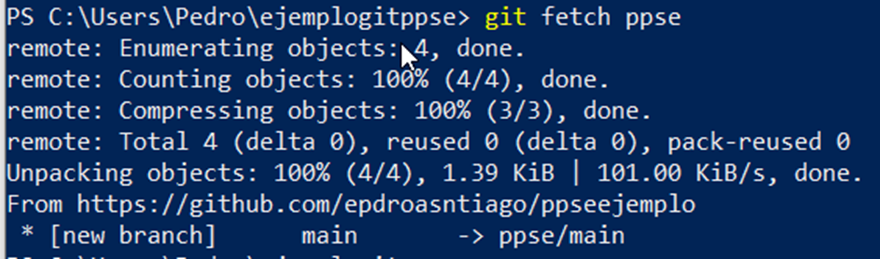
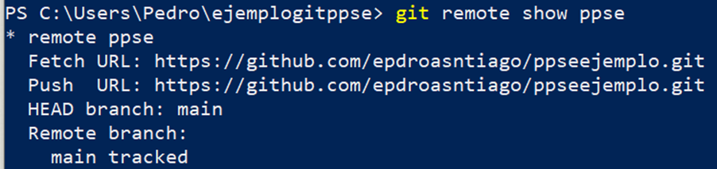
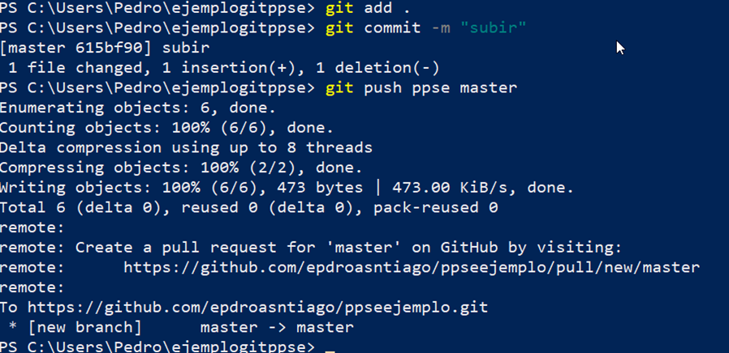
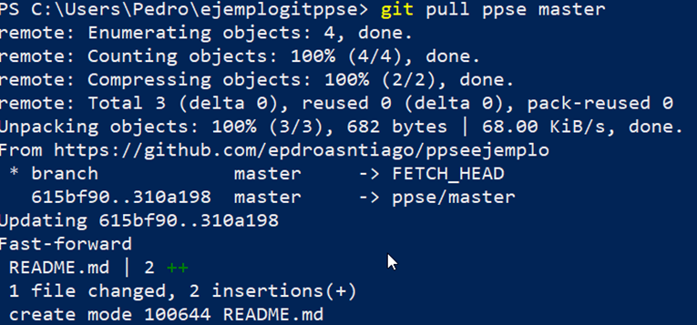
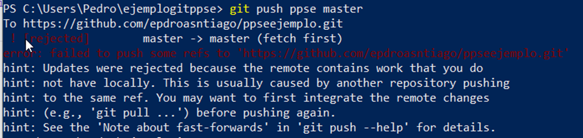
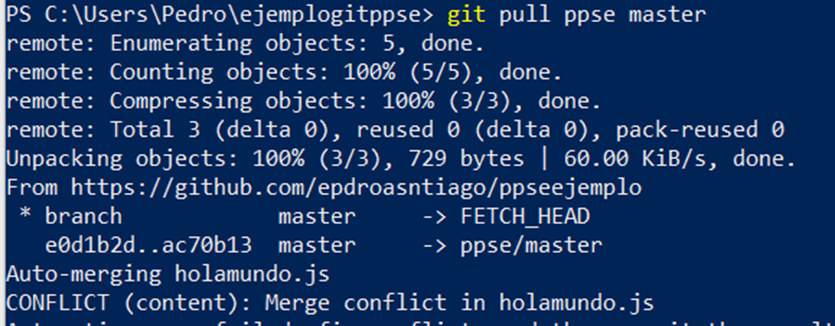

La gestión del código con un repositorio local en ocasiones no cumple con los requerimientos del proyecto, por ejemplo trabajar un grupo de desarrolladores, copias de seguridad o publicar el proyecto para que esté disponible para otras personas.
Git permite gestionar los proyectos tanto en repositorios locales como remotos, realizando en uno y otro las acciones vistas en los puntos anteriores. Las tareas comunes al trabajar con repositorios remotos son:
- Registrar el repositorio remoto.
- Gestionar las ramas en remoto.
- Publicar los cambios en local en el repositorio remoto.
- Descargar los cambios del repositorio remoto en el repositorio local.
Si bien es posible instalar repositorios en remoto gestionados por la propia empresa como GitLab también se puede optar por repositorios de empresas como GitHub, Bitbucket o el servicio que ofrece también GitLab. Existen cuentas gratuitas con limitaciones y empresariales.
Al estar disponible en Internet, estas empresas han añadido mecanismos de autenticación y autorización a los repositorios que se alojan en esta.
Para la autenticación se ofrecen diferentes alternativas dependiendo del proveedor del servicio, por ejemplo GitHub permite:
- Credenciales con usuario y contraseña.
- Certificado para ssh.
- Acceso mediante token.
Registrar el repositorio remoto
Se trabaja con GitHub aunque es posible trabajar con otros proveedores de estos servicios. Se supone que existe un repositorio en local ya sea vacío o con código y confirmaciones. Usando la interfaz web de GitHub crear un repositorio, en este caso privado, para que solicite validación.
Para ver los repositorios remotos configurados en local ejecutar el comando:
git remoteQue debe estar vacío.
Para añadir un repositorio remoto ejecutar:
git remote add [nombre_local] [url]
El nombre_local permite identificar el repositorio más fácilmente. Un ejemplo:
git remote add ppse https://github.com/epdroasntiago/ppseejemplo.git.
Para traer el código que se encuentra en remoto a local ejecutar:
git fetch [nombre_local]Al ser un repositorio privado solicita las credenciales, en el caso de usar un sistema con interfaz gráfica aparece una ventana en el que da la opción de:
- Validación con navegador: Usuario y contraseña.
- Token: Obtener de la web de GitHub.
Ir a la cuenta de GitHub y generar un token con los permisos para el mismo.
El resultado desde la línea de comandos es:

Si se clona el repositorio, se añade de forma automática el repositorio con el nombre origin.
Para ver la información del remoto:
git remote show [nombre_remoto]

Por último indicar que se pueden eliminar remotos con el comando:
git remote rm [nombre_remoto]Publicar los cambios en local en el repositorio remoto
El proyecto avanza, se realiza un commit y se desea subir a uno de los servidores remotos, para ello simplemente ejecutar el comando
git push [nombre_repositorio] [rama]Para conocer las ramas que tiene el remoto con
git remote show [nombre_remoto]Recordar realizar un commit antes de actualizar el servidor remoto. Una secuencia completa:

Descargar los cambios del repositorio remoto en el repositorio local
También se puede dar el caso de realizar cambios en otro equipo o por otra persona, que estos se suban al repositorio remoto y que sea necesario descargarlos al local, para descargarlo usar el comando:
git pull [nombre_remoto] [rama]
Gestionar las ramas en remoto
Una situación usual en el desarrollo de un proyecto es que varias personas trabajen sobre el mismo repositorio remoto y sobre la misma rama, al trabajar en paralelo los repositorios locales de los desarrolladores y el remoto al subir los cambios se encuentran en estados diferentes y puede ser conflictivo.
Al realizar un push en el servidor remoto en el que previamente otra persona ha realizado otra actualización da error por conflictos.

Es necesario realizar un proceso de sincronización que consiste en obtener los cambios con pull, unirlos y ahora hacer si hacer un push.
Se ejecuta el comando:
git pull [nombre_remoto] [rama]En las líneas en que detecta los conflictos pueden suceder 2 casos:
- Que consiga resolver los conflictos de forma automática.
- Que no consiga resolver los conflictos e inserte comentarios en el fichero para resolver los conflictos.

Resolver los conflictos seleccionado en el código lo que está entre <<<<<<< HEAD y ======= que es contenido que se encuentra en el remoto o entre ======= y >>>>>>> contenido que se encuentra en local.